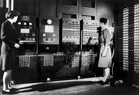
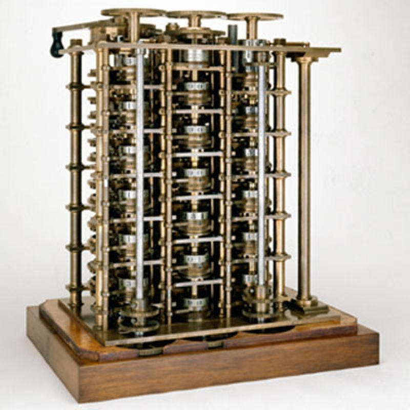

Before the era of keyboards and regular programming languages, computers were programmed via electricity or gears. Flipping certain switches could act as different inputs and then you get different outputs. A great example of this is the ENIAC (pictured below)
Many experts agree that Charles Babbage was the first person to create a computer, that being his Difference Engine. The function of the difference engine was to be able to do simple subtraction problems using a system of gears. Despite not holding a candle to a modern calculator (one that could instantly solve these problems in a more compact form) this machine was revolutionary and created the concept of a "Computer Science".
Overtime, computers when from: Gears, to punch cards, to switches, and now binary code is becoming a thing. 1s and 0s can be used to represent a multitude of concepts but 1 common factor is that a 1 delivers high power and a 0 delivers lower power. Despite being more efficient than past methods, looking at and writing binary was a tedious task no matter who you were, and that needed to be fixed.
After a while of using direct binary, IBM created a system called FORTRAN. With this a programmer could code in the human-friendly FORTRAN language and using that as a guide, convert into binary. All though this process was leagues better than writing into direct binary, it still seemed to slow for some. Thats where Grace Murray Hopper comes in. She created a tool that could take human code and automatically convert it into computer instructions. This program would end up saving countless hours and the same concept is still used in the modern day.